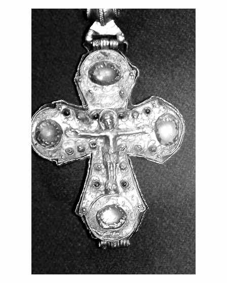

Catalog › CE-0589 · COM2026-15224004
Pandantiv-crucifix de aur din tezaurul de la Dinogeția (Garvăn), Muzeul Național de Istorie a României
sec. XI (1001–1100) · Garvăn (Dinogeția), România · Muzeul Național de Istorie a României
double-sided reliquary cross (enkolpion), aur; c. XI (1001–1100); found at Garvăn (Dinogeția), România; kept at Muzeul Național de Istorie a României.


Identificare
- Categorie
- Encolpion bivalv (relicvar)
- Material
- Aur
Iconografie
- Descriere avers
- Hristos răstignit pe o cruce de aur cu pietre, atârnată de lanț.
Datare și atribuire
- Datare
- sec. XI (1001–1100)
Descoperire
- Localitate
- Garvăn (Dinogeția)
- Țară
- România
- Context
- Tezaur
- Coordonate
- 45.3511° N, 28.1570° E
- Precizia locului
- Doar localitatea
Păstrare și referințe
- Colecție
- Muzeul Național de Istorie a României
- Bibliografie
- Fotografie: autor necunoscut (credit: „Courtesy Cristian Chirita”), Wikimedia Commons, licență CC BY 3.0, https://commons.wikimedia.org/?curid=15224004 (accesat 17.10.2026).
- Figura
- Wikimedia Commons, pagina 15224004
- Observații
- Pagina 15224004 dă „sec. IV” (probabil greșeală de șablon); datarea „XI sec.” e din titlul fotografiei 22782922 (Sailko, „tesoro di Dinogetia”, „pendente a croce di fattura bizantina”). Categoria Commons: „Engolpion of Dinogeția treasure”. Fotografia nu atestă explicit bivalva. Coordonate: ale localității (aproximative), nu date în sursă.
Citare: Corpus Encolpiorum, CE-0589, Pandantiv-crucifix de aur din tezaurul de la Dinogeția (Garvăn), Muzeul Național de Istorie a României, --root/piese/COM2026-15224004/ (accesat 2026-10-20).